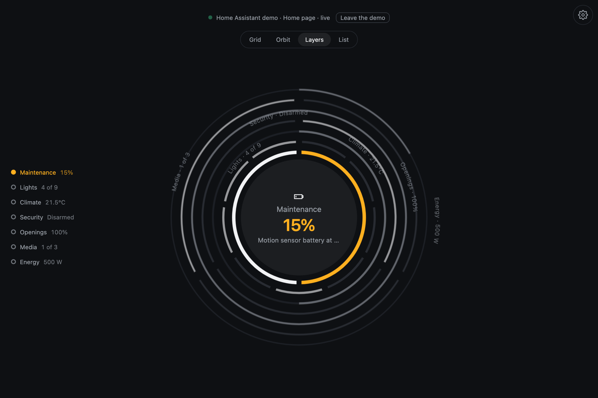
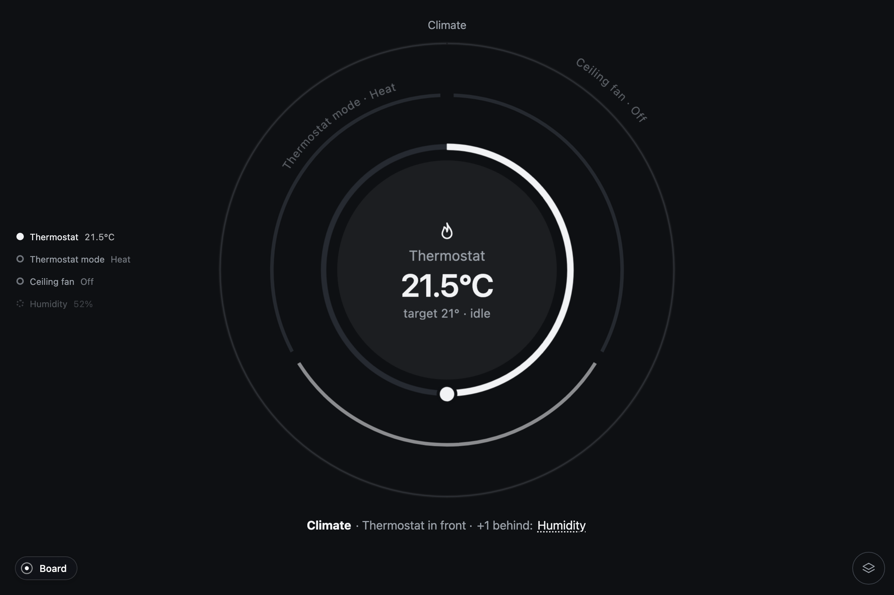
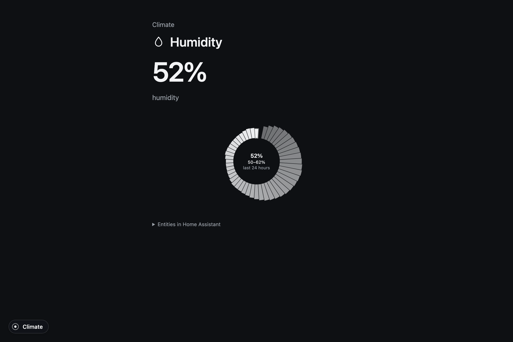
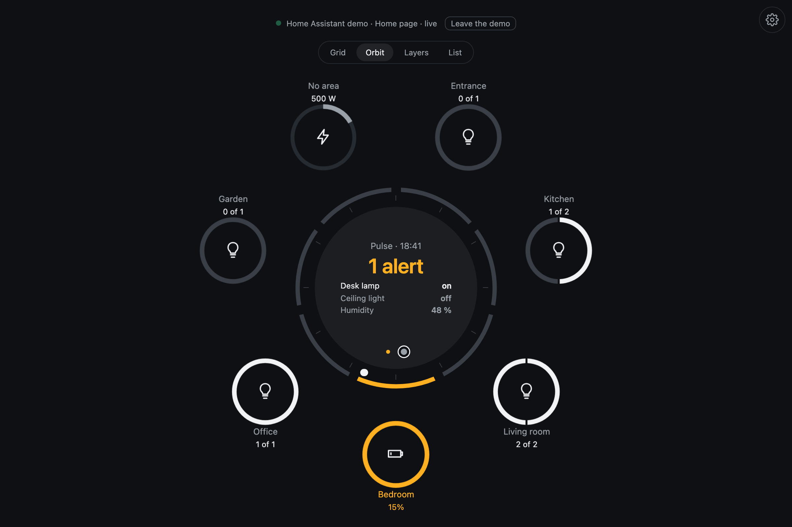
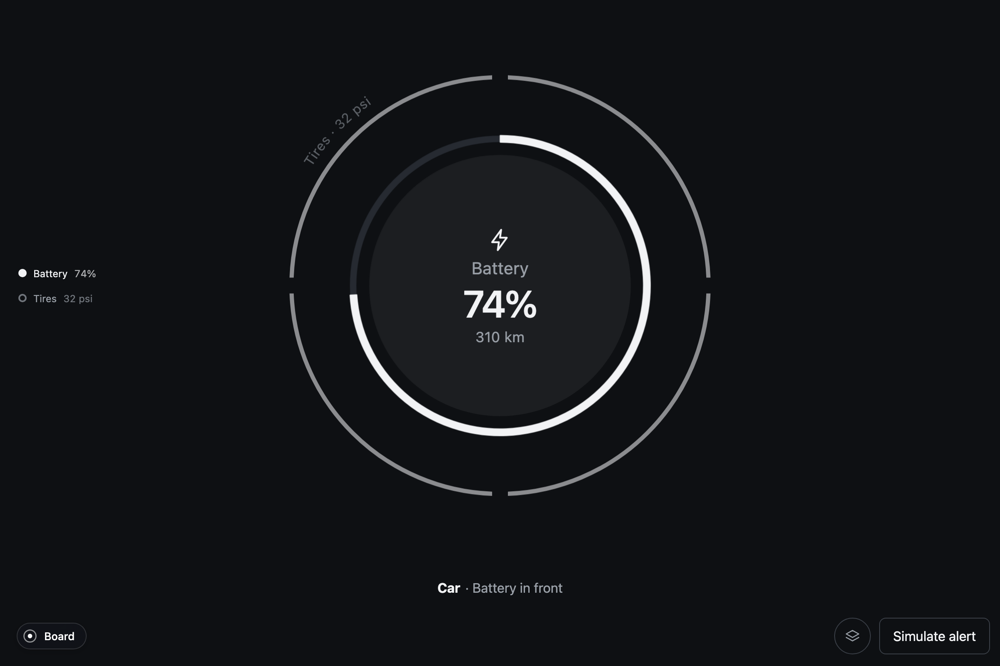
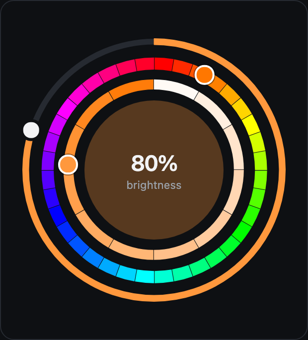

Monitor and control systems with rings and layers.
Pulse shows each system as a circular object with layers for its readings and controls. A thermostat, for example, has a temperature dial in front and its mode and fan controls behind it. Drag the ring to adjust the temperature, or tap another layer to use it. When an alert appears, its layer moves to the front until it is resolved.

How the layers work
The front layer shows the reading and controls you are using. The rings behind it keep other channels visible, and you can tap one to bring it forward.
- What is active
The front layer is the one you read and use. Its face holds the value; its ring holds the control.
- What is urgent
An alert raises its layer and colors only what fails: a segment, a band, a label. Never the disc.
- Where you are
Zoom in to use a system, then zoom out to see the board again.
From the board to a single reading




When several things need attention
Pulse orders alerts by urgency and draws only a few layers at a time. The other channels remain accessible by name. Color, a heavier ring and a wave mark the part that needs attention; systems without alerts stay in the background.
Read about the design decisions and alert behavior in Why.
Sources
Pulse is a core: a host hands it systems and readings, and the object does the rest. Home Assistant is one source, in its own repository; a machine, the world's calamities, a boat, a fleet, a swarm of drones, the sky, the space station and a city's cameras are others on the same core.

Home AssistantThe card, the strategies, the app. By system or by room.
Your own sourceConnect your own readings and actions through the host interface.
ElementsSee each component with sample data and its parameters. In your projectDescribe your systems, write a host, mount the board, set a theme.
In your projectDescribe your systems, write a host, mount the board, set a theme.
Built on two small libraries
The rings, the arcs and the layers in depth are Orbit, a CSS layout system for things that grow around a center. The zoom between the board, a system and its detail is Zumly. Pulse uses them to display readings, handle controls and bring alerts forward.
Pulse is open source, MIT. Made by ZumerLab. Source on GitHub.